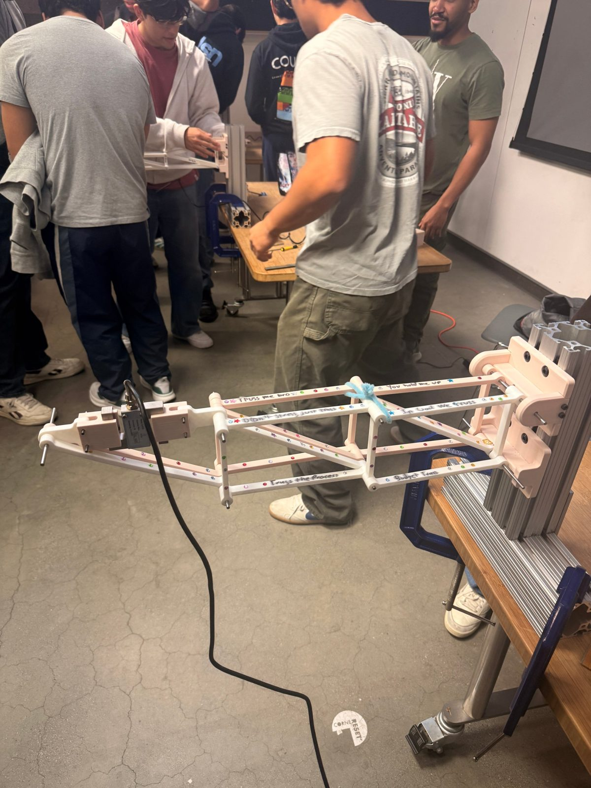

Design, build and test a cantilever truss that supports 1 kg and 2 kg loads, then predict the force in one member and measure it with a load cell. The goal: under 10% error between prediction and reality.
Two designs in the simulator, a failure analysis to pick one, then a build and load test with a load cell standing in for one member.
super diva truss!
Concept + Simulation
We developed two concepts and modeled both in the JHU Truss Simulator. Design 1 was lighter, but one member had a safety factor of 0 and low buckling capacity. Design 2 spread forces more evenly across repeating triangular bays.
Failure Analysis + Revision
Ran member-by-member failure analysis (tension, compression, in-plane and out-of-plane buckling) using the given PLA properties. Chose Design 2, and increased member thickness from 5 mm to 6.5 mm (11 mm height) so every compression member stayed above a safety factor of 2.
Build
Assembled the 3D-printed PLA members with steel pins. The final dimensions matched the design within 1–2 mm. Then we bedazzled it and wrote truss puns on the top members.
Testing
Mounted the truss to the wall fixture with member CD replaced by a load cell, and loaded it at 1 kg, 2 kg, then 3 kg.
1.02%
error at 1 kg (target: under 10%)
1.76%
error at 2 kg
3 kg
held with no deformation
554 mm
span · 261.9 g total mass
- Reduce thickness on members with safety factors well above 2 to cut weight
- Shorten unsupported compression members with an extra diagonal
- Add more triangular framing near the load, where forces peak
- Taper the truss height toward the free end for span efficiency (not allowed under this project’s rules, but the next move)
This project made buckling feel real. We had to redo part of our design once we saw how sensitive long compression members are to height and thickness, and that’s what pushed us to Design 2. Our truss ended up heavier than it needed to be, but it was reliable, and our predictions landed within 2% of the measured forces. Next time I’d push for a lighter design that still holds the line.